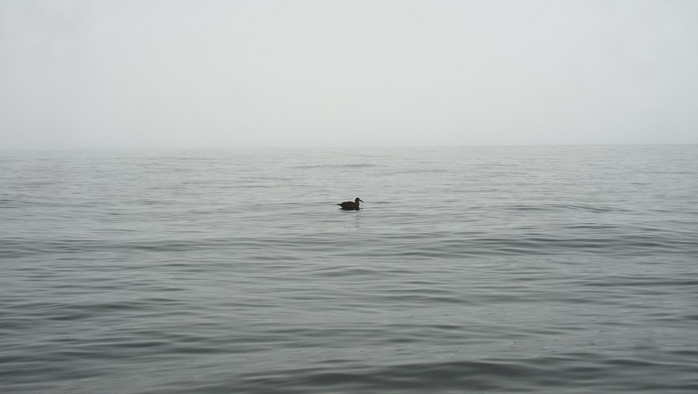
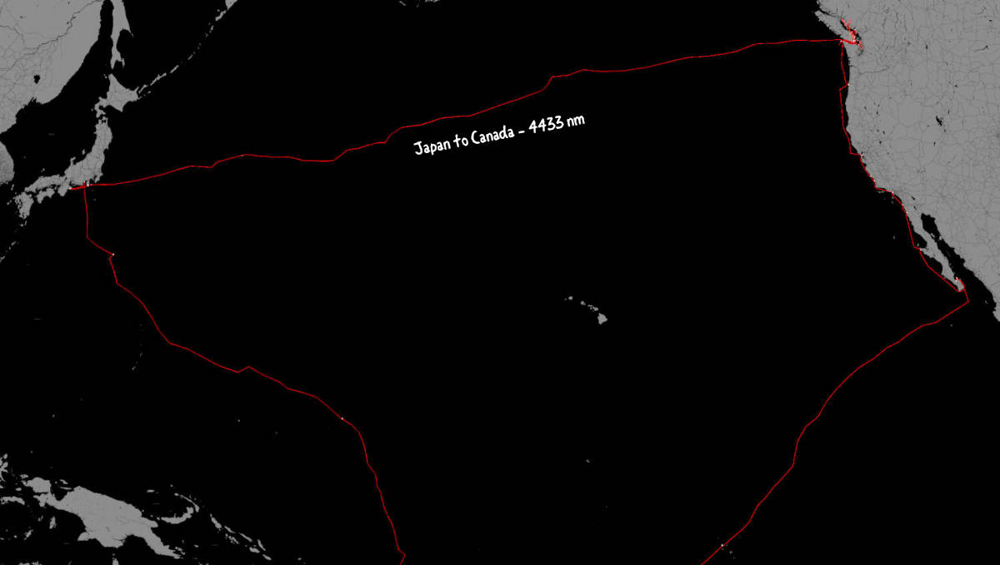
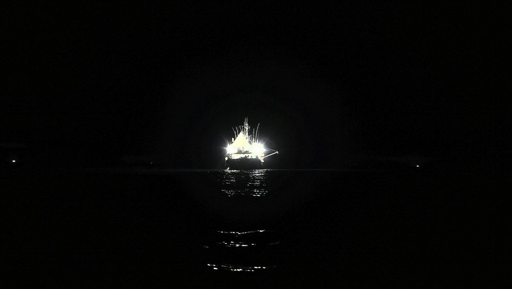
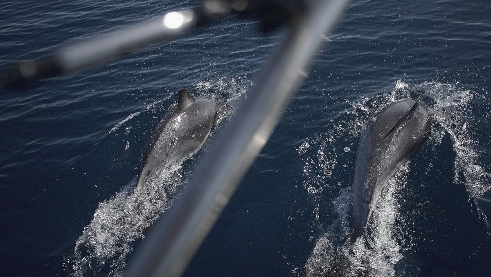
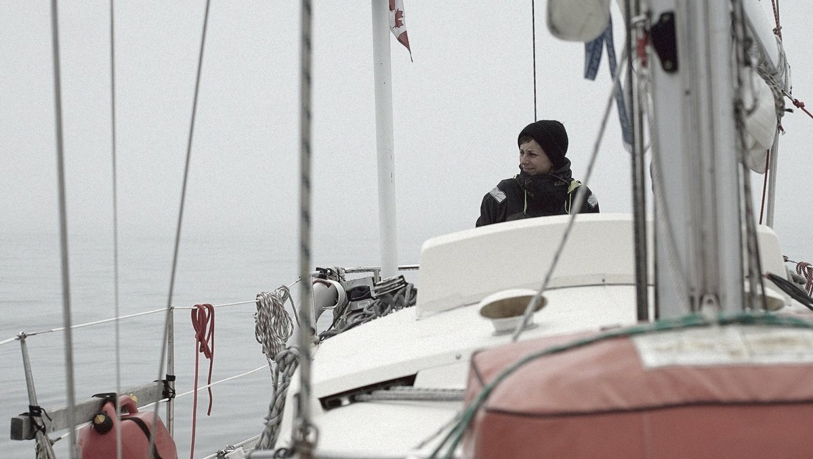
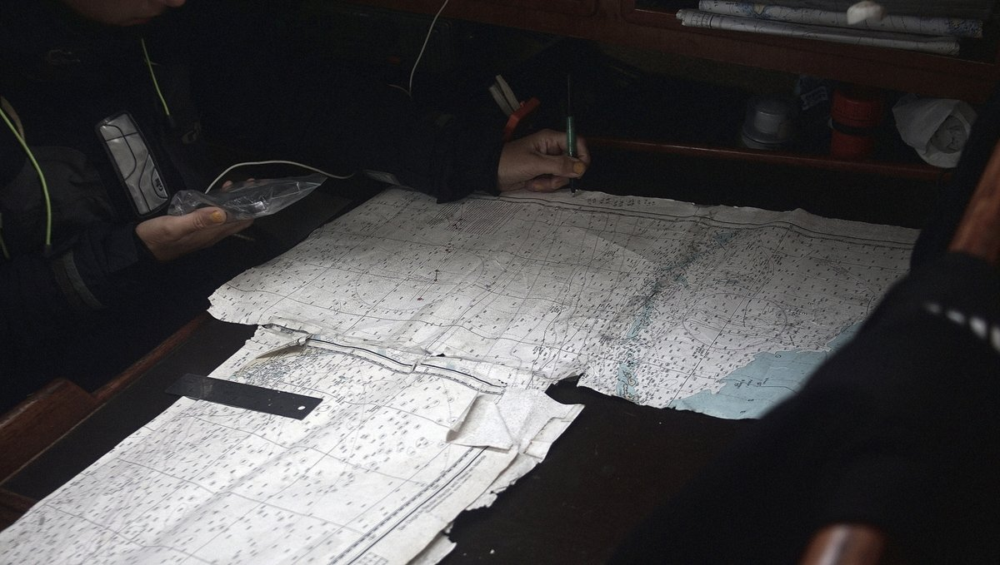

north pacific ocean
On June 2020, we left Shimoda JP to sail straight to Victoria, laying 8,210 km (4433 nm) away. The passage took 51 days.
During our North Pacific crossing we kept a detailed journal of the day’s events. We wrote most entries while off-watch, whenever we had some free time. The handwritten journal, the North Pacific Logbook was transcribed and published online, before being revised and published as an e-book called Busy Doing Nothing.
On this passage, we lost a 100 W solar panel and our spray hood (dodger) after being hit by a large wave. Our engine also accumulated issues, and same goes for our headsail, jib cars and interior wood. 4 years of hard sailing has taken its toll on our little boat, we now have to replace the running rigging, upholstery, chainplates, dinghy, cabin wiring etc. We plan to spend a few winters in Victoria to fix up Pino, spreading costs over a long period of time to permit our finances to recover. If you want to help fund our replacement gear, see our support page, every little bit helps!
   